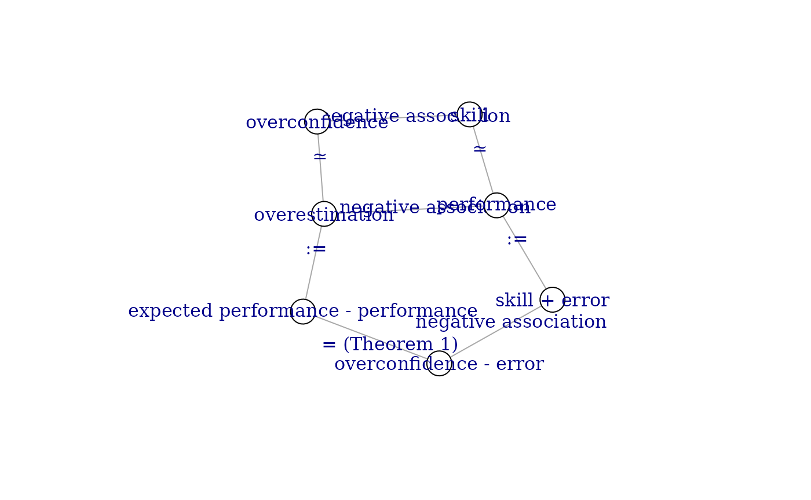

Introduction
In this example, we formalize the Dunning-Kruger (DK) effect according to (Feld, Sauermann, and De Grip 2017). The paper defines the DK effect as “low performers vastly overestimate their performance while high performers more accurately assess their performance”. It further contains a discussion of the DK effect and then restates it in terms of skill and overconfidence to show that measurement error can cause significant bias in the relationship between performance and overestimation. Statistical methods that can be used to correct for this bias are also discussed. Since this theory contains definitions of abstract concepts, relationships between the concepts, mathematical derivations as well as commonly used statistical models and experimental paradigms, it serves as a nice illustration on how to FAIRify all these different aspects.1
Definitions
Let’s start with collecting all definitions the theory makes use of:
- performance as a test score
- performance estimation as the difference between the expected and the actual test score
- skill as the ability to perform well on a given test
- overconfidence as the difference between self-assessed and actual skill
- measurement error as luck on a test
Since these are verbal definitions, we can track them as a markdown file:
definitions <-
"
## Definitions
- **performance** as a test score
- **performance estimation** as the difference between the expected and
the actual test score
- **skill** as the ability to perform well on a given test
- **overconfidence** as the difference between self-assessed and actual skill
- **measurement error** as luck on a test
"
cat(definitions, file="definitions.md")Relationships
We can visualise the originally proposed relationships between the concepts as a graph:
As well as the reformulation of Feld, Sauermann, and De Grip (2017):
With signifying a negative association, signifying “measured by” and signifying “defined as”.
To FAIRify this graph, we can use a graph specification library such as igraph (Csárdi et al. 2025):
library(igraph, warn.conflicts=FALSE)
g <- graph_from_literal(
skill -- overconfidence,
skill -- performance,
overconfidence -- overestimation,
performance -- overestimation,
"skill + error" -- "overconfidence - error",
"skill + error" -- performance,
"expected performance - performance" -- overestimation,
"expected performance - performance" -- "overconfidence - error"
)
E(g)$relationship <- c(
"negative association",
"≃",
"≃",
"negative association",
":=",
":=",
"negative association",
"= (Theorem 1)"
)We can visualize this graph with

Finally, we save the graph in a standardized format such as GraphML:
write_graph(
g,
"relationship_graph.txt",
format = "graphml"
)Mathematical formulation
Definitions
We define the random variables
- denoting skill
- denoting measurement error, with , independent of all other random variables included in the model
- denoting self-assessed skill
And further performance as overconfidence as expected performance as Overconfidence is measured by overestimation defined as
Theorems
Theorem 1:
Proof:
From eq. @ref(eq:oc) and @ref(eq:ep) it follows that and further from eq. @ref(eq:ep) and @ref(eq:p) we see
Since there is no accepted standard on how to represent mathematical knowledge as a digital object (see also this whitepaper), there are many possible routes to FAIRify equations. Here we opt for a representation as latex code as a widely used and known way of typesetting equations. First, we create a file “equations.tex” containing the actual derivations:
\section{Definitions}
Define random variables
\begin{itemize}
\item $s^*$ denoting skill
\item $\epsilon$ denoting measurement error, with $\Exp[\epsilon] = 0$, $\epsilon$ independent of all other random variables included in the model
\item $s^*_s$ denoting self-assessed skill
\end{itemize}
\noindent Then we define performance $p$ as
\begin{equation} \label{p}
p \coloneq s^* + \epsilon
\end{equation}
and overconfidence $oc^*$ as
\begin{equation} \label{oc}
oc^* \coloneq s^*_s-s^*
\end{equation}
and expected performance $p_e$ as
\begin{equation} \label{ep}
p_e \coloneq s^* + oc^*
\end{equation}
Overconfidence $oc^*$ is measured by overestimation $oe$ defined as
\begin{equation}
oe \coloneq p_e - p
\end{equation}
\section{Theorems}
Theorem 1:
\begin{equation}
oe = oc^* - \epsilon
\end{equation}
Proof 1:
\noindent From eq. \ref{oc} and \ref{ep} it follows that $p_e = s^*_s$ and further from eq. \ref{ep} and \ref{p} we see
\begin{align} \label{dd}
oe &= p_e - p \\
&= (s^* + oc^*) - (s^* + \epsilon) \\
&= oc^* - \epsilon
\end{align}Then, we create a file “render.tex” containing the necessary information (document format, packages, commands) that can be used to render the equations:
\documentclass[a4paper,11pt]{article}
% load packages
\usepackage[utf8]{inputenc}
\usepackage{amsmath}
\usepackage{amssymb}
\usepackage{mathtools}
\usepackage{parskip}
% Statistics
\newcommand{\Var}{\mathbb{V}}
\newcommand{\Exp}{\mathbb{E}}
% commands
\renewcommand*{\epsilon}{\varepsilon}
% operators
\DeclareMathOperator{\cov}{cov}
\begin{document}
\input{equations.tex}
\end{document}As you can see, we use \input{equations.tex} to insert
the equations into the document. This way, the mathematical theory is
version controlled separately from the LaTex code required to render it.
This way, it is clear when changes are made to the theory (i.e.,
equations.tex is edited), and when changes are made to the
formatting of the theory (i.e., render.tex is edited).
Statistical Models
Using a linear regression model, the Dunning-Kruger effect can be stated as with . Substituting the observable variables and rearranging according to eq. @ref(eq:p) and @ref(eq:dd):
Correction
There are different ways to correct for the bias introduced by measurement error:
- Bias correction: use a bias correction formula that takes into account the correlation between performance and the error term
- IV approach: measure performance on a second test () and compute .
Let’s add this model again as latex code by adding a new file “linear_model.tex”:
\subsection{Linear Model}
Using a linear regression model, the Dunning-Kruger effect can be stated as
\begin{equation}
oc^* = \alpha + \beta_1 s^* + u
\end{equation}
with $\beta_1 < 0$.
Substituting the observable variables and rearranging according to eq. \ref{p} and \ref{dd}:
\begin{equation}
oe = \alpha + \beta_1 p + u - \epsilon(1 + \beta_1)
\end{equation}
\subsubsection{Correction}
There are different ways to correct for the bias introduced by measurement error:
\begin{itemize}
\item Bias correction: use a bias correction formula that takes into account the correlation between performance and the error term
\item IV approach: measure performance on a second test ($p_2$) and compute $\beta_1 = \frac{\cov(oe, p_2)}{\cov(p, p_2)}$.
\end{itemize}and adding to render.tex:
If we now render render.tex, the resulting document
looks like this: